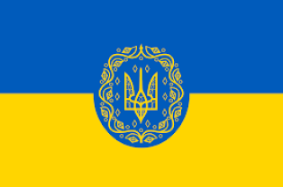
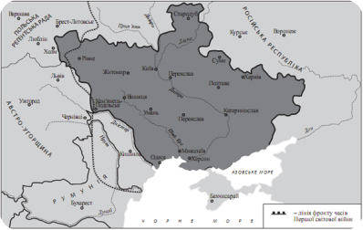
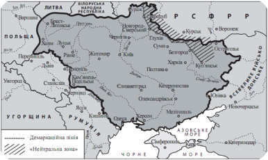
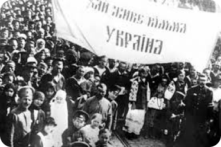

УНР (Українська народна республіка)

Українська Народна Республіка (УНР) була проголошена в листопаді 1917 року після Жовтневого перевороту в Росії. Це сталося після прийняття III Універсалу Української Центральної Ради (УЦР), яка стала її головним органом. Спочатку УНР проголошувалася як автономна республіка у складі Російської республіки, зі столицею в Києві.
Через агресію більшовицької Росії, УЦР IV Універсалом від 22 січня 1918 року проголосила УНР цілком незалежною, вільною та суверенною державою. Ця подія стала кульмінацією Української революції 1917–1921 років. Незважаючи на героїчний спротив (наприклад, бій під Крутами), молода держава стикнулася з війною.


Після короткого періоду Української Держави гетьмана Скоропадського (квітень-грудень 1918), УНР була відновлена Директорією. На чолі з Володимиром Винниченком, а потім Симоном Петлюрою, Директорія продовжувала важку боротьбу проти більшовиків, білогвардійців та інтервентів, намагаючись зберегти українську державність.
Відродження УНР відбулося у листопаді 1918 року під проводом Директорії УНР, ключовою фігурою якої став Симон Петлюра. Найважливішою подією цього періоду став Акт Злуки (22 січня 1919) — урочисте об'єднання УНР із Західноукраїнською Народною Республікою (ЗУНР), що символізувало соборність українських земель.
